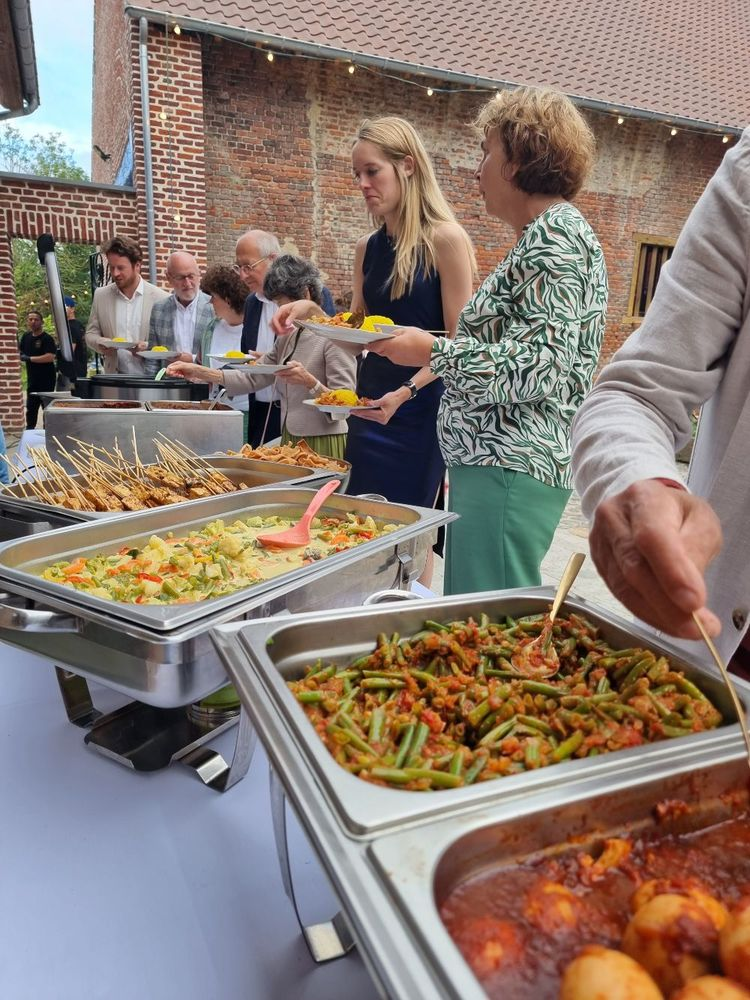
Catering
Een Moluks-Indonesisch rijst- of satébuffet bij u thuis of op locatie, voor privé en zakelijk.
v.a. € 21,50 p.p.Meer info
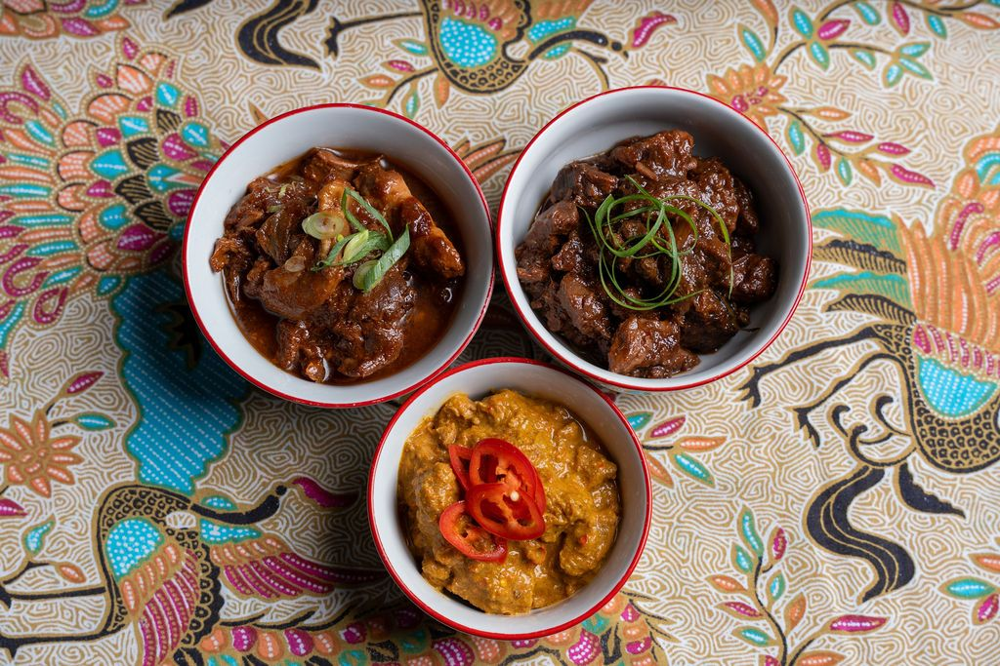
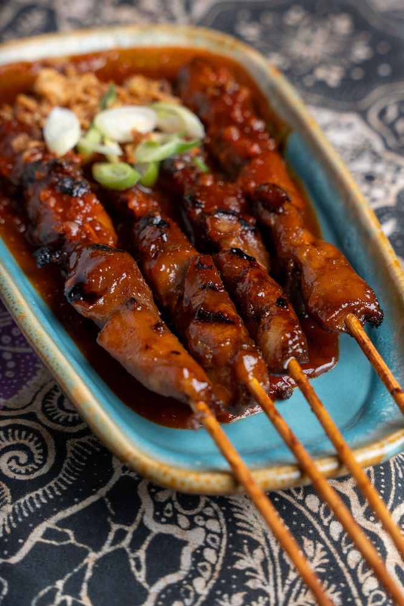
Chef Chesron Nanuru kookt zoals hij het van zijn oma en moeder leerde, elke dag vers. Eet bij ons aan tafel, haal af of laat ons koken voor uw feest.
Gewoon helemaal Senang. Fijne sfeer, lieve bediening, heerlijk eten, ook na de vierde keer nog.Marc C. · TheFork, 10/10
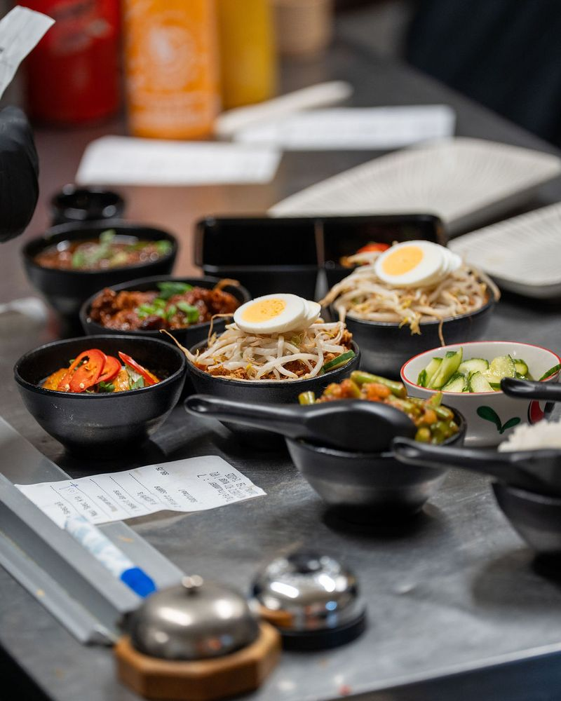
Saté van spek en kip, ayam smoor, rendang, daging smoor, sayor lodeh, telor pedis, sayor buncis, gado gado, atjar ketimun, kroepoek en witte rijst. Alles vers gemaakt, om hier te eten of mee te nemen.
Vanaf 2 personen. Per 2 rijsttafels kiest u er nasi kuning, bami goreng of nasi goreng bij.
We koken voor uw feest of bedrijf, u kunt het restaurant afhuren of bij Chesron leren koken.

Een Moluks-Indonesisch rijst- of satébuffet bij u thuis of op locatie, voor privé en zakelijk.
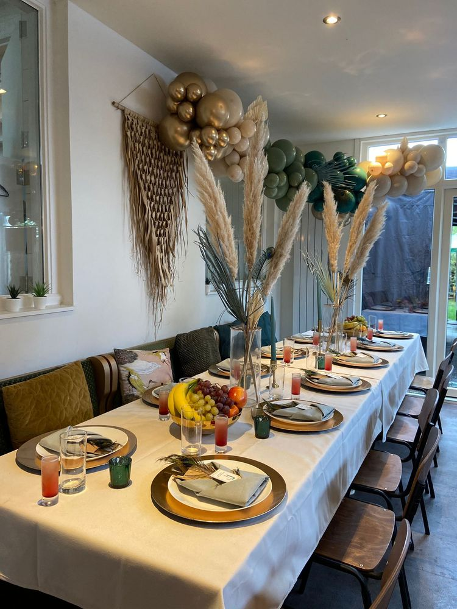
Voor uw feest, receptie of bedrijfsuitje. Wij zorgen voor de hapjes, de drank en het eten.
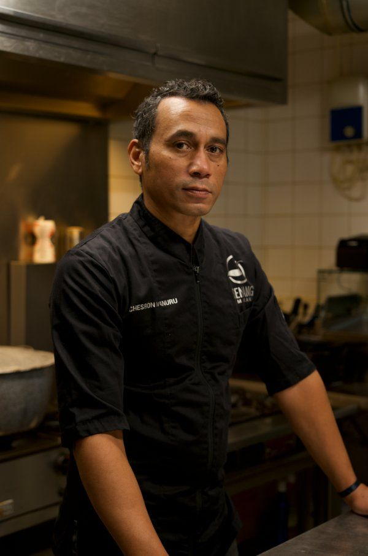
Leer van Chesron een rijsttafel maken, vegetarisch koken, stoven of Indonesisch barbecueën.
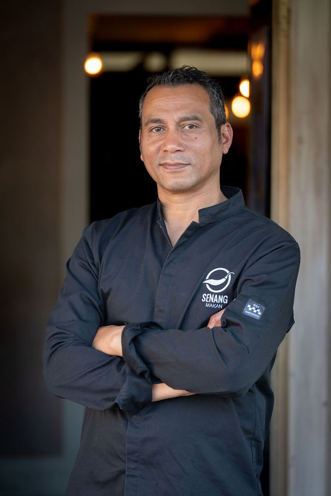
"Vers eten is onze kwaliteit"
Senang Makan opende op 1 december 2017 aan de Teteringsedijk, de straat tussen de stationsbuurt, het centrum en de wijk waar van oudsher Molukse gezinnen wonen. Eigenaar en chef-kok is Chesron Nanuru.
Chesron leerde koken op Molukse wijze van zijn oma en zijn moeder. In de open keuken maakt hij met zijn brigade alles vers, en de kaart wisselt regelmatig. Een allergie of dieetwens? Daar houden we graag rekening mee. In de zaal zorgt het team onder leiding van zijn zus Yochabel voor een ongedwongen sfeer.
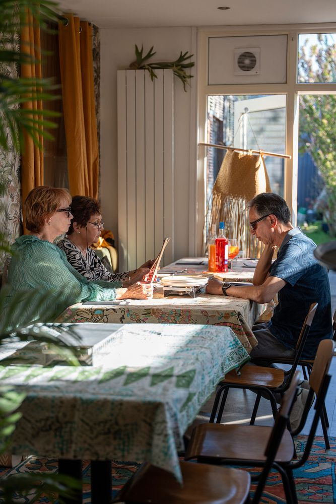
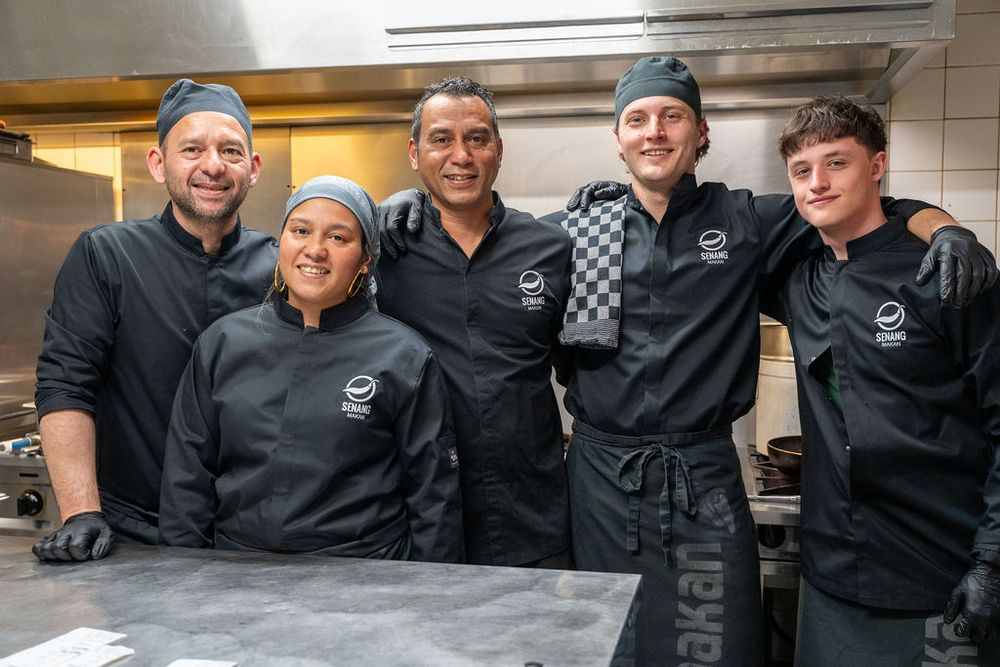
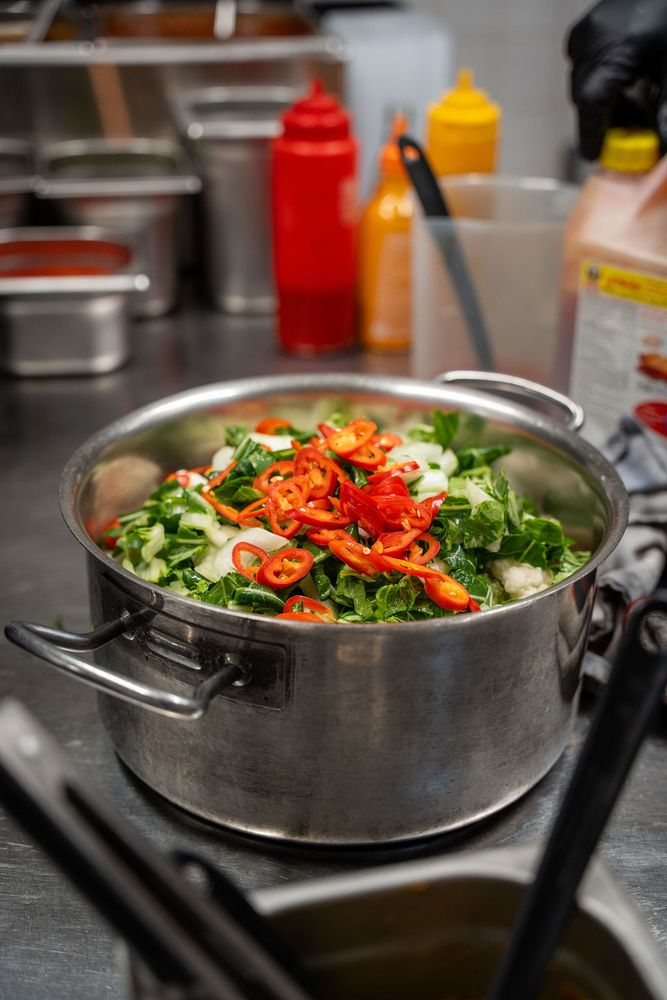
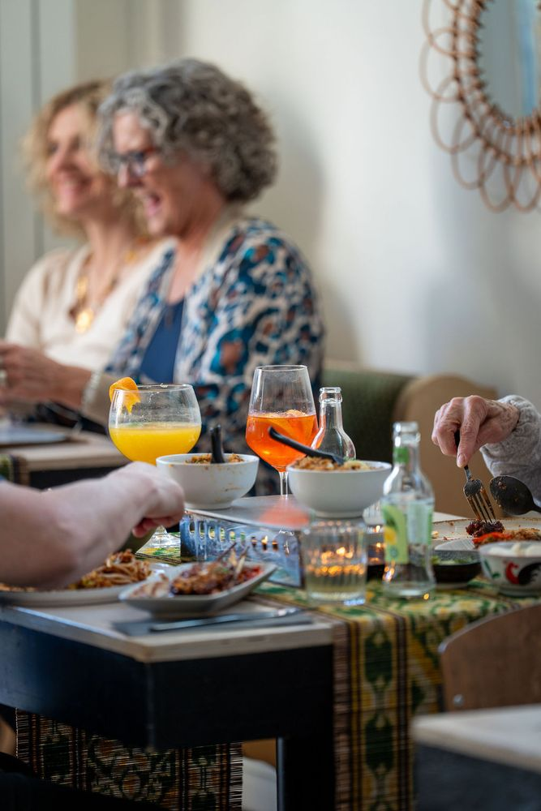
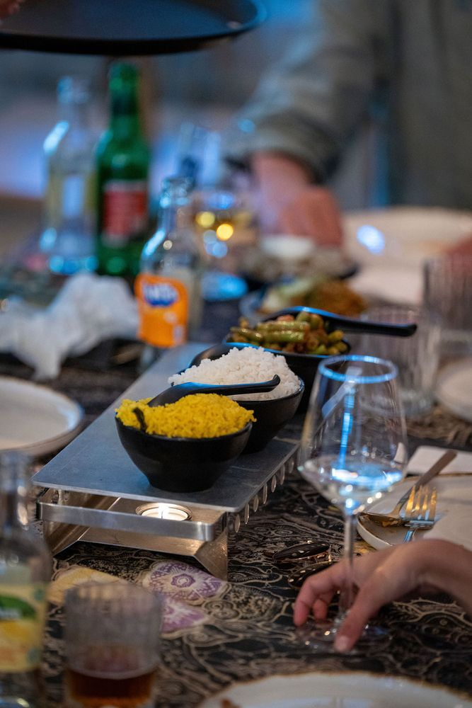
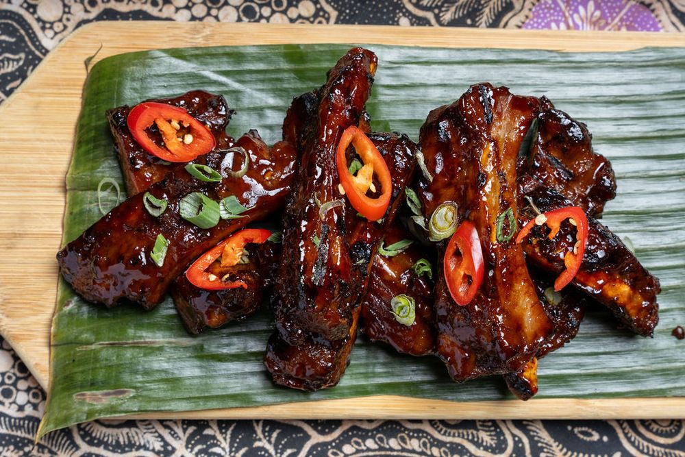
Gewoon helemaal Senang. Fijne sfeer, lieve bediening, heerlijk eten, ook na de vierde keer nog.Marc C. · TheFork
Top smaken en goede, aardige bediening. We komen zeker terug.Fam. H. · TheFork
Hier kan je echt heerlijk eten! Reserveer op tijd!Janine M. · TheFork
Vriendelijke bediening, superlekker eten. Zeer aan te raden.Johan V. · TheFork
Heerlijk eten, leuke sfeer en vriendelijke gastvrije bedieningPatricia K. · TheFork
Heerlijk eten en vriendelijke serviceJoni D. · TheFork
Bel of app ons voor een tafel. Afhalen? Bel even, dan zetten we het voor u klaar.
| Maandag t/m woensdag | Gesloten |
| Donderdagkeuken tot 19:30 | 16:30 – 22:00 |
| Vrijdag en zaterdagkeuken tot 20:00 | 16:30 – 22:00 |
| Zondagkeuken tot 19:30 | 16:30 – 21:00 |